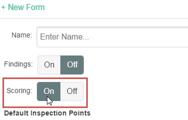

An option to include inspection scoring is available when you create a new inspection form. Scoring allows users to easily identify problem inspections, with a color-coded inspection score displayed in the inspection summary.
When the option is turned on, you can specify the weight of each question and the value of each possible answer. The score is determined by comparing the actual question scores to the max question score for all applicable questions.
Question Weight: Each question can have a weight, represented by an integer 0-10. If the weight is zero, then the question is not included in the inspection score.
Answer Value: Each answer may have a value of 0, 1, 2, or 3 or NULL. If the answer is zero or NULL, the answer is not included in the inspection score.
The question weight and answer values for each question are used to calculate the Inspection Score in the following way:
Question Score (per question) = weight * value.
Total Possible Question Score (per question) = weight * max(value). The maximum total question score for one question is 30 (if weight=10 and value=3).
Maximum Inspection Score = Sum (Total Possible Question Scores)
Inspection Score = [Sum (Question Scores) / Maximum Inspection Score] * 100. This value is rounded to the nearest integer.
To use Inspection Scoring, you must turn on the option when the Inspection Form is created.
